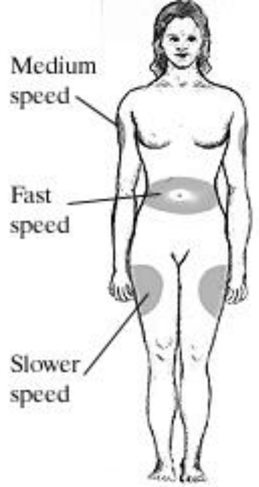
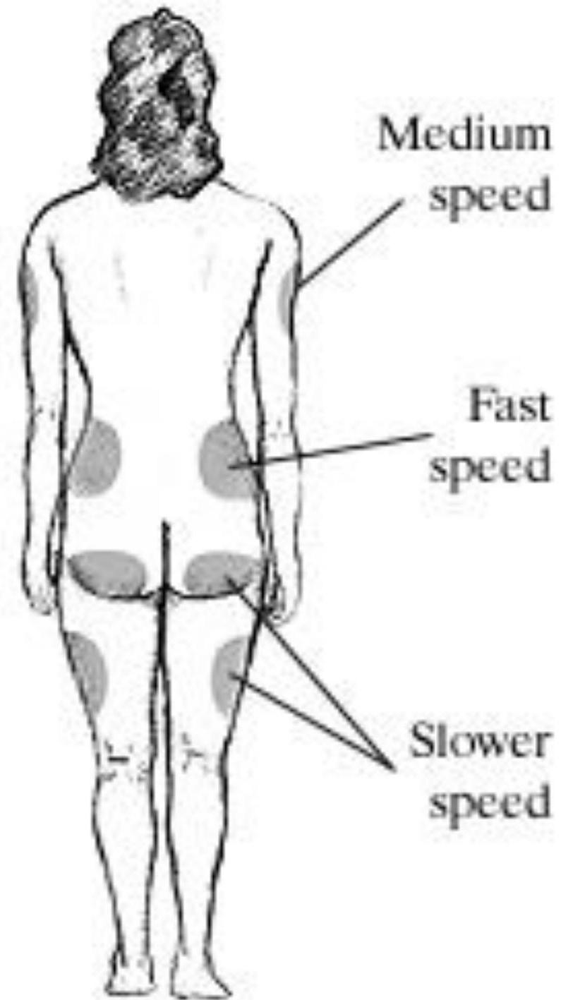

🍬
Topic 06
Diabetes Mellitus
01
Overview & Classification
Definition
- Diabetes mellitus (DM) encompasses a heterogeneous group of disorders defined by a derangement in carbohydrate metabolism caused by a defect in either insulin secretion or insulin action.
- DM is caused by complete absence of, relative deficiency of or resistance to the hormone insulin.
- This is the most common endocrine disorder; the primary sign is hyperglycaemia which is accompanied by varying degrees of disruption of carbohydrate and fat metabolism.
Primary DM is categorized as:
- type 1
- type 11
In secondary DM, the disorder arises as a result of other conditions, and gestational diabetes develops in pregnancy.
Type 1 Diabetes Mellitus
- Previously IDDM, this occurs mainly in children and young adults
- Caused by insulin deficiency following destruction of the insulin-producing pancreatic beta cells.
- The onset is usually sudden and can be life threatening.
- There is severe deficiency or absence of insulin secretion due to destruction of β-islet cells of the pancreas.
- Treatment with injections of insulin is required.
- There is usually evidence of an autoimmune mechanism
Type 2 Diabetes Mellitus
- Characterized by hyperglycemia, insulin resistance, and relative impairment in insulin secretion.
- Previously NIDDM, this is the most common form of diabetes, accounting 90% of cases.
- Its onset is gradual, often over many years, and it frequently goes undetected until signs are found on routine investigation or a complication occurs.
- Deficiency of glucose inside body cells occurs despite hyperglycaemia and a high insulin level (insulin resistance).
Risk Factors for Type 2
- Overweight: Obesity predisposes to type 2 diabetes by increasing peripheral resistance to insulin-mediated glucose uptake.
- Genetic susceptibility: a strong genetic component for type 2 disease is based upon observations that the risk of diabetes is significantly increased in close relatives of an affected patient.
- Gender: Girls are 1.3 to 1.7 times more likely than boys to develop type 2 diabetes in childhood
- sedentary lifestyle
- increasing age
02
Pathophysiology
Detailed Pathophysiology Mechanisms
- Raised plasma glucose level—After a carbohydrate-rich meal the plasma glucose level remains high because:
- cells are unable to take up and use glucose from the bloodstream, despite high plasma levels
- conversion of glucose to glycogen in the liver and muscles is diminished
- there is gluconeogenesis from protein, in response to deficiency of intracellular glucose.
- Glycosuria and polyuria- The concentration of glucose in the glomerular filtrate is the same as in the blood and, although diabetes raises the renal threshold for glucose, it is not all reabsorbed by the tubules. The glucose remaining in the filtrate raises its osmotic pressure, water reabsorption is reduced and the volume of urine is increased (polyuria).
- Weight loss: The cells are essentially starved of glucose because, in the absence of insulin, they are unable to extract it from the bloodstream.
Gestational Diabetes
- Glucose intolerance during pregnancy
- Placental hormones contributes to insulin resistance
- High risk: glycosuria, family history, marked obesity
- 24-28 weeks of gestation
- Will have greater risk of developing Type 2
Gerontologic Considerations
- Elevated blood glucose levels are also age related
- Increase with advancing age
- Increased fat tissue, decreased insulin production, physical inactivity, decrease in lean body mass
03
Clinical Presentation & Diagnosis
Clinical Features
Major Symptoms
- Polydipsia
- Polyuria
- Polyphagia
- Fatigue
- Weight loss (Type 1)
Other Signs
- Blurred vision
- Recurrent infections
- Dry skin, itching
- Numbness of hands and feet
- Drowsiness after meals
Criteria for Diagnosis
- Fasting plasma glucose ≥126 mg/dL (7.0 mmol/L)
OR
- 2-h plasma glucose ≥200 mg/dL (11.1 mmol/L) during an OGTT
OR
- Random plasma glucose ≥ 200 mg/dL (11.1 mmol/L)
04
Management
Five Components of Management
- Pharmacotherapy
- Exercise
- Monitoring
- Education
- Nutrition
Dietary Management
- Carbohydrate 45-65% total daily calories
- Protein-15-20% total daily calories
- Fats—less than 30% total calories, saturated fats only 10% of total calories
- Fiber—lowers cholesterol (Soluble—legumes, fruits; Insoluble—whole grain breads)
Pharmacotherapy: Oral Agents
| Class / Action | Examples | Side Effects | Nursing Implications |
|---|---|---|---|
| Insulin Stimulators | |||
| Sulfonylureas Stimulate insulin secretion |
Glipizide (Glucotrol) Glimepiride (Amaryl) Glyburide (Micronase) |
Hypoglycemia, weight gain | Monitor for hypoglycemia. Teach patient to avoid alcohol. |
| Meglitinides Stimulate insulin secretion |
Repaglinide (Prandin) nateglinide (Starlix) |
Hypoglycemia, weight gain | Dosed with meals. Hold dose if patient skips meal. |
| Insulin Sensitizers | |||
| Biguanide Decreases glucose production; increases uptake |
Metformin (Glucophage) | Nausea, diarrhea, decreased appetite | Give with meals. Withhold for contrast dye tests. Monitor for lactic acidosis. |
| Thiazolidinediones Reduces insulin resistance |
Piloglitazone (Actos) rosiglitazone (Avandia) |
Nausea, weight gain, fluid retention | Works well with obese patients. Avoid with liver disease. |
Pharmacotherapy: Insulin Therapy
- Rapid acting—Humalog and Novolog onset 15', peak 60-90' and last - 2-4 hrs
- Short acting—regular. Onset is 30-60', peak in 2-3h and last for 4-6 hours. Regular insulin - for IV use.
- Intermediate insulins—NPH or Lente. Onset 3-4h, peak 4-12 hours—last 16-20 hours —e.g— Humulin N
- Long acting—Humulin Ultralente. Onset 6-8h, peak 12-16 h and lasts 20-30h.


Complications of Insulin Therapy
- Local / systemic allergic reactions
- Insulin lipodystrophy (lipoatrophy or lipohypertrophy)
- Insulin resistance
- Morning hyperglycemia—Dawn phenomenon (nocturnal surges of growth hormone) so give dose at HS not before dinner
- Somogyi effect—nocturnal hypoglycemia followed by rebound hyperglycemia-decrease evening dose of insulin
05
Acute Complications
Hypoglycemia
- Caused by: Too much insulin or oral agents, Too little food, Excessive physical activity
- Surge in epinephrine and norepinephrine-sweating, tremors, tachycardia, palpitations, nervousness and hunger
- CNS – Poor concentration, headache, lightheadedness, confusion, amnesia, slurred speech, inco-ordination, diplopia
Treatment for Hypoglycemia
- 2-3 teaspoons of sugar or honey, Sweets, Fruit juice or soda, Glucose tablets
- Recheck BS 15 minutes- If same, repeat treatment. After improvement- may give milk.
- Extreme situations, give glucagon. (May cause nausea & vomiting). D50W.
Diabetic Ketoacidosis (DKA)
Caused by an absence or markedly inadequate amount of insulin. The deficit results in disorders in the metabolism of carbohydrate, protein, and fat.
Three main c/f: Hyperglycemia, Dehydration / electrolyte loss and acidosis
Diagnostic Findings:
- BS between 300-800
- Acidosis, Electrolyte abnormalities
- Elevated BUN, creatinine and hct r/t dehydration
Management:
- Rehydrate with normal saline, then follow with .45% NaCl then D5.45NS
- Restore electrolytes, ECGs
- Hourly blood sugars, IV insulin
- Avoid bicarbonate as can affect serum K+
Hyperglycemic Hyperosmolar Nonketotic Syndrome (HHNS)
- HHNS is a serious condition in which hyperosmolarity and hyperglycemia predominate, with alterations of the sense of awareness
- At the same time, ketosis is minimal or absent.
- Patients may tolerate polyuria and polydipsia until neurologic changes occur.
06
Long-term Complications
- Cardiovascular - Common in type 2
- Renal (microvascular) - in type 1
- Nephropathy – microalbuminuria (Diabetes causes hypertension in renal vessels which cause leaking glomeruli, deposits in narrow vessels, scarring and vascular damage)
- Retinopathy
Neuropathies
Affect all types of nerves. Includes peripheral, autonomic and spinal nerves. Capillary basement membrane thickening. Nerve conduction is disrupted.
Peripheral Neuropathy
- Paresthesias, burning sensations, numbness, decrease in proprioception.
- Charcot foot can result from abnormal weight distribution on joints secondary to lack of proprioception
Autonomic Neuropathy
- Cardiac- MI
- GIT - delayed gastric emptying, early satiety
- Renal - Urinary retention
- Hypoglycemia unawareness
Diabetic Foot
- Disease of large and small blood vessels impairs blood supply to and around the extremities. If peripheral neuropathy is present, sensation is reduced.
- A small injury to the foot may go unnoticed. In DM healing is slower and injuries easily worsen if aggravated.
Foot Management
- Foot care-inspect feet and shoes daily
- Examine feet every time goes to doctor
- Closed toe shoes
- Trimming toenails, Good foot hygiene
- Glycemic control is the key to preventing complications